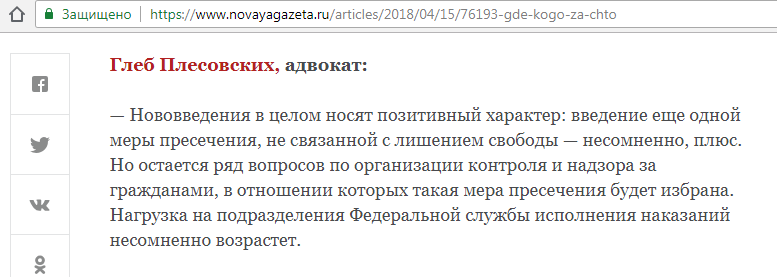
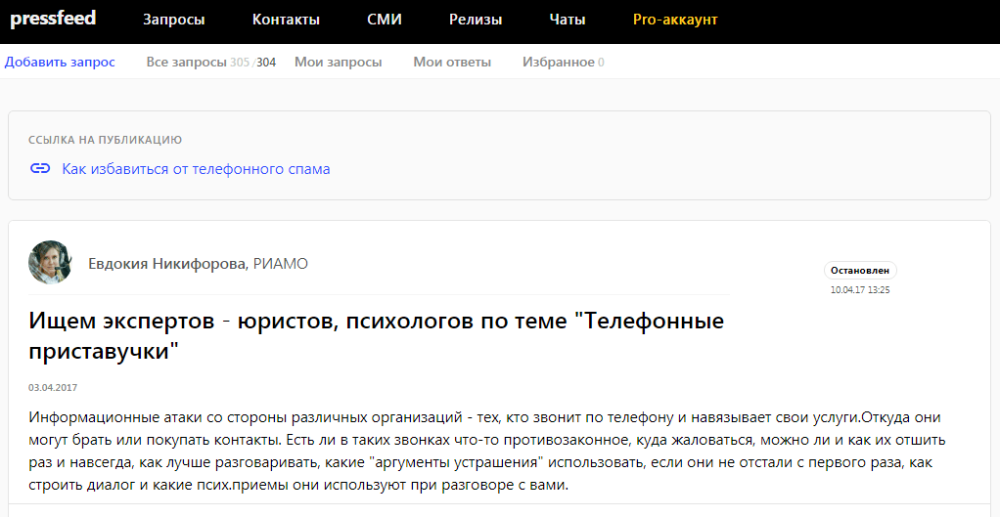
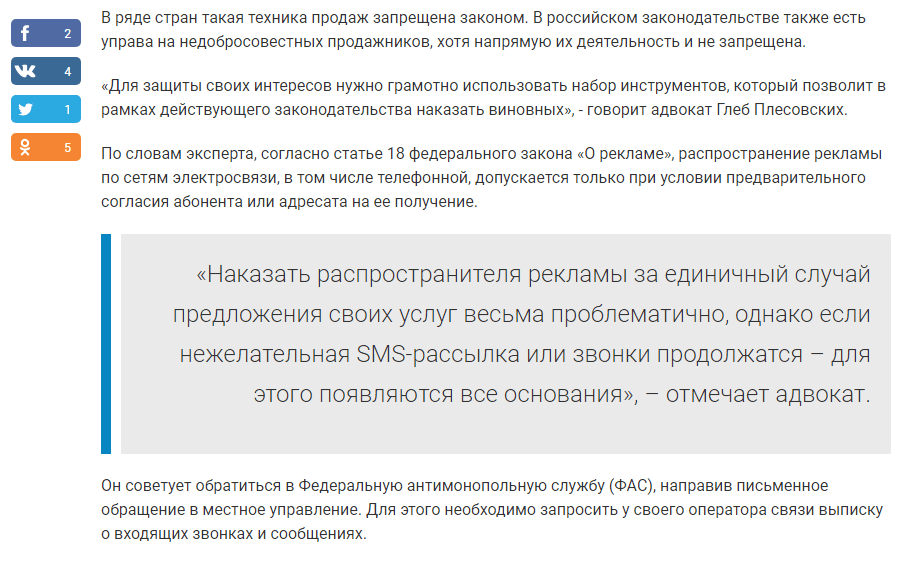
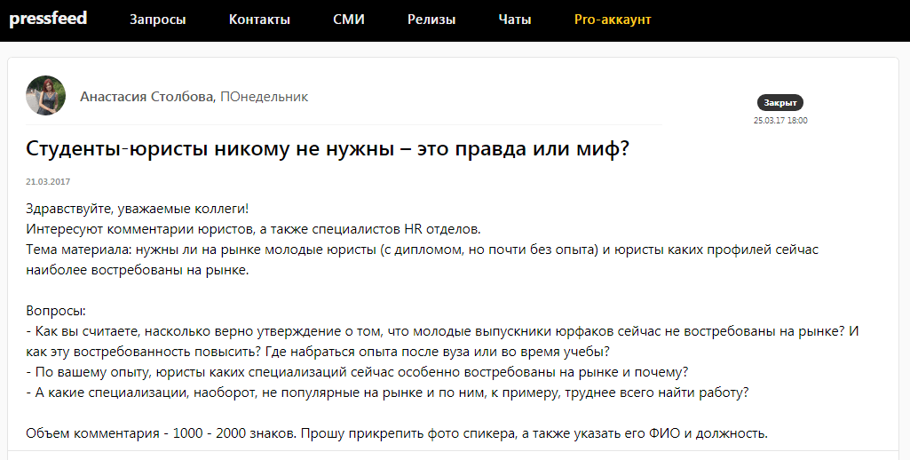
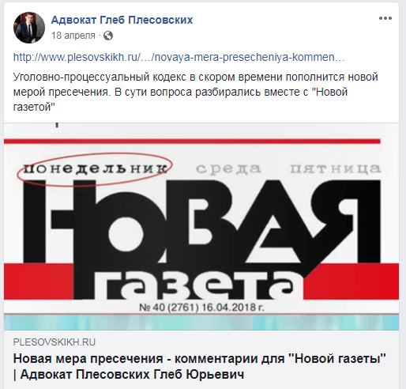

Кейсы и отзывы пользователей — как продвигать бизнес с помощью Pressfeed
Опыт юриста: как с помощью публикаций в СМИ привлечь новых клиентов и увеличить трафик на личный сайт в 3 раза
История адвоката Глеба Плесовских о том, как формировать свой имидж и привлекать клиентов с помощью публикаций в СМИ. Бесплатно, быстро и не отрываясь от рабочего процесса.
Обычно адвоката выбирают по рекомендациям, но советы знакомых — это лишь один из решающих факторов. Вот кто-то говорит человеку: «Обратись к Глебу Плесовских, он поможет». Дальше потенциальный клиент идет в интернет и начинает «гуглить» информацию об адвокате. Если адвокат дает комментарии в крупных СМИ, рассказывает истории из практики, пишет о работе в социальных сетях — значит, он знает, о чем говорит.
Глеб Плесовских занимается уголовными делами экономической направленности и тщательно отслеживает изменения в законодательстве. Он осознает, что если адвокат хочет завоевать лояльность и доверие клиентов, то должен высказывать свое мнение по актуальным юридическим темам и доказывать миру, что он эксперт в своем деле. Публикации в уважаемых федеральных СМИ — это один из тех «пунктов», которые цепляют людей. Тех, которые работают на репутацию и вынуждают поверить, что этот юрист — профессионал, его мнение заслуживает внимания общественности.
В голове будущего клиента, который собирается обратиться к адвокату, возникает мысль: он дает интервью «Коммерсанту» и «Новой газете», а на их страницы попадают только эксперты высшего уровня.
Как делать публикации в СМИ, если у вас нет времени
Как выйти на редакторов или журналистов нужных медиа? Налаживать связи и работать с представителями СМИ напрямую — непросто и долго, спросите у любого пиарщика. Тем более, у востребованного адвоката с огромной загрузкой и непрерывными встречами просто нет времени, чтобы «дружить» с журналистами и предлагать им свои идеи и тексты. Самый оптимальный и короткий путь в СМИ — пользоваться сервисом Pressfeed, в котором уже собраны все актуальные запросы от журналистов.
«Чуть больше года назад я зарегистрировался на сервисе журналистских запросов Pressfeed. Все, что нужно делать, — проверять запросы по юридической теме и отвечать на них до установленного дедлайна. Такие публикации отнимают всего несколько часов в месяц и работают на личный бренд».
Журналисты постоянно нуждаются в консультации юристов по множеству вопросов. В день на сервисе Pressfeed может появляться от 15 запросов на юридические темы.
В апреле 2018 журналист «Новой газеты» разместил на сервисе запрос о грядущем дополнении уголовно-процессуального законодательства еще одной мерой пресечения — запретом на определенные действия. Среди такого рода действий могут быть запрет на управление автотранспортным средством, использование компьютерной техники или средств связи.

Запрос от «Новой газеты» на Pressfeed
Глеб Плесовских откликнулся на запрос журналистки «Новой газеты» и написал комментарий по теме.

Комментарий Глеба Плесовских в «Новой газете»
«После выхода публикации мои коллеги начали интересоваться: как у меня получилось дать комментарий для такого издания? Но самое главное, что ко мне поступило множество вопросов от разных людей в соцсетях и через мой сайт, связанных с новой мерой пресечения», — говорит Глеб.
В этом же месяце эксперт дал похожий комментарий для газеты «Гудок». Тоже через запрос на Pressfeed.

В этом выпуске вышла статья с мнением Глеба
По итогам апреля 2018 количество уникальных посетителей на официальный сайт Глеба Плесовских в дни выхода публикаций выросло в 3 раза.
«Если в медиа вышли несколько материалов с вашим участием, это не значит, что человек сразу обратится к вам, ведь услуги адвоката — специфичный и сложный продукт, который не всегда нужен нам здесь и сейчас. Но он запомнит фамилию этого адвоката. Именно так и строится личный бренд, повышается лояльность, доверие, узнаваемость и соответственно, вы становитесь более востребованным специалистом, а количество клиентов планомерно растет».
Также на Pressfeed был запрос от журналиста известного московского портала «РИАМО». Нужно было рассказать, как бороться с телефонной рекламой и холодными звонками, и делать это правильно с точки зрения закона.

Запрос от редакции «РИАМО»
«Эту публикацию перепечатывали другие издания, тогда я тоже получил множество вопросов от заинтересованных пользователей, а за тот период трафик на сайт вырос практически в 3 раза. Мои клиенты видели эти комментарии, и возможно, это повлияло на их решение обратиться именно ко мне».

Фрагмент публикации «РИАМО»
В другой раз Глеб рассуждал о студентах-юристах для издания «ПОнедельник».

Запрос от издания «ПОнедельник»
Комментарий вышел в материале «50 оттенков трудоустройства юриста».

Материал с участием Глеба
Глеб Плесовских старается делать в среднем по 2 публикации в месяц — этого достаточно, чтобы получить нужный охват аудитории. Эксперт старается отвечать на запросы деловых СМИ, которые читают образованные и прогрессивные люди. По мнению адвоката лучше брать качеством, а не количеством.
«Мне нравится, что я могу свободно выбирать тех журналистов и те издания, с которыми хотел бы сотрудничать. После года работы с Pressfeed у меня появилось множество контактов с редакциями, в том числе и топовых федеральных СМИ. Сейчас обращаются ко мне за экспертными комментариями по моей специальности. Таким образом, я получаю внимание к себе как к профессионалу и постепенно формирую свою репутацию».
Однако, по мнению Глеба, опубликовать комментарий через Pressfeed — это лишь часть работы эксперта. Дальше вы должны сделать все, чтобы материал с вашим участием увидели и обсудили как можно больше заинтересованных людей человек.
Вышел материал в СМИ — сделайте репост в свои социальные сети
Ссылки и анонсы на все статьи в СМИ с Глебом сразу появляются в социальных сетях эксперта: на его страницах в Instagram и Facebook.

Пост Глеба Плесовский на его странице в Facebook
Кто-то перейдет на статью из Instagram, а кто-то увидит ее у меня в посте на Facebook. Так вы получите максимальный охват аудитории (друзья могут делать репосты, а это тоже современная форма рекомендаций). Отлично, если пользователи вовлекаются в публикацию, начинают комментировать, зарождается дискуссия.
Однако помните о регулярности. Если потенциальный клиент находит вашу страницу в социальной сети и видит интересный контент (публикации в СМИ, истории из практики, кейсы), опубликованный вчера или сегодня, это повысит его доверие.
Заведите на сайте раздел для экспертных материалов и публикаций в СМИ с вашим участием
Глеб Плесовских делает ставку на полезный контент, поэтому на его личном сайте plesovskikh.ru есть специальные разделы: «Полезное», «Обо мне — Практика», «Новости». В этих разделах находятся личные статьи эксперта, ответы на вопросы клиентов, истории из практики, юридические советы и так далее. Именно эти страницы сайта показывают опыт и профессионализм адвоката. Глеб всегда дублирует в подраздел «СМИ обо мне» все вышедшие публикации в медиа.

Раздел «СМИ обо мне»
«Публикации в медиа — это в том числе контент для вашего личного сайта. Для портфолио специалиста. Когда потенциальный клиент заходит на сайт и видит недавние публикации, он обязательно обратит на них внимание».
4 совета, как получить эффект от публикаций в СМИ
- Научитесь правильно и четко излагать свои мысли. Тогда вам будет проще писать комментарии для журналистов, и издания будут чаще и быстрее их одобрять.
- Мониторьте сервис Pressfeed несколько раз в неделю, но тратьте время на запросы только тех изданий, которые вы считаете самыми заметными и стоящими.
- Увеличивайте охват публикации с помощью ваших социальных сетей и личного сайта.
- Следите за статистикой: как комментарии повлияли на посещаемость вашего сайта. Соответственно, анализируйте, что больше интересует аудиторию.
Pressfeed — это один из самых полезных и эффективных инструментов для развития личного бренда, это возможность заявить о себе. При этом им легко пользоваться и можно выбирать только профильные темы с вашей спецификой. Всего пару часов в неделю на мониторинг запросов — и вы получите публикации в ведущих российских СМИ, которые повлияют на репутацию и узнаваемость эксперта.